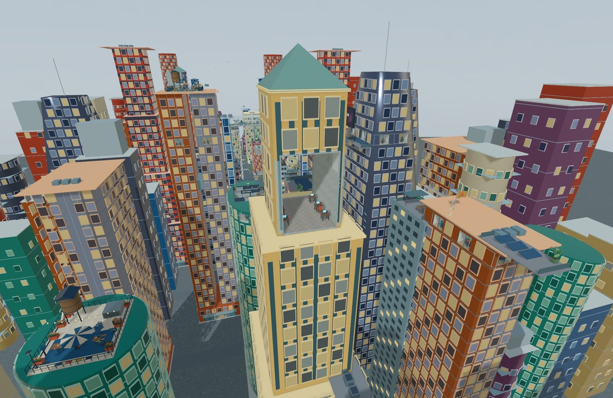
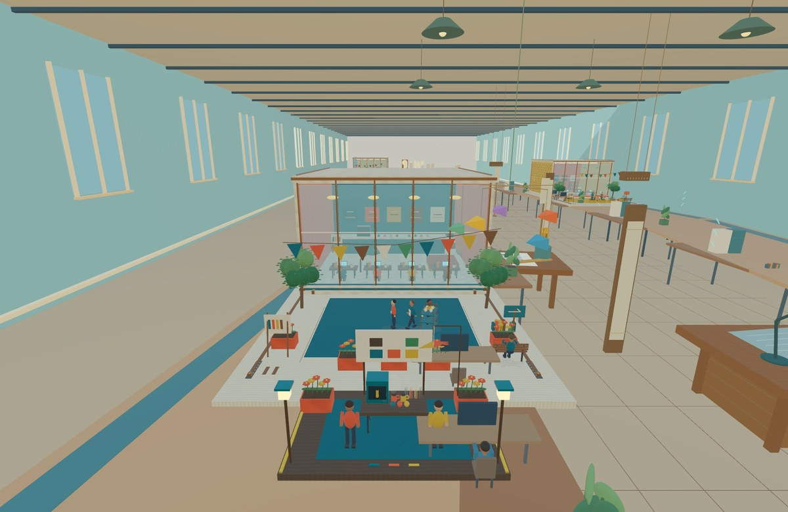
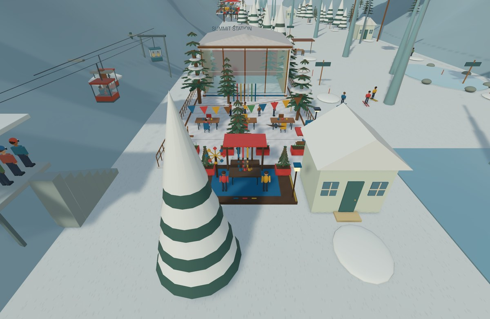
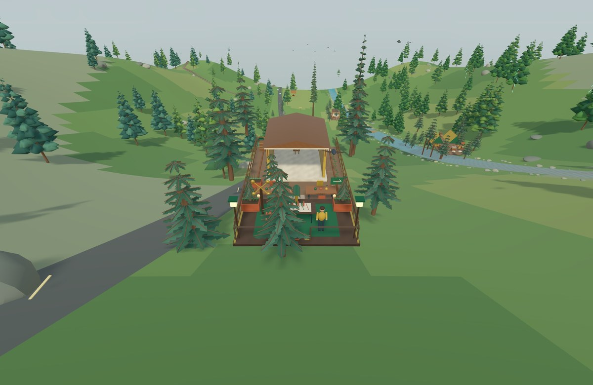

16 places to explore
From an office desktop to snowy peaks, floating islands and a forest valley, discover routes shaped by each scene.
Paper flight for iPhone & iPad
Find a route between rooftops. Catch a rising breeze. Guide your paper plane from its first throw to its final landing.
Explore the worldsHow to playStart free in Desktop Adventure. Unlock every other world with one purchase.

From an office desktop to snowy peaks, floating islands and a forest valley, discover routes shaped by each scene.
Seven paper-plane designs offer different handling. Start with the Classic, try a broad glider or challenge yourself with the four-wing Wildcard.
Choose Easy, Medium or Challenging. Use tilt or touch controls, adjust your flight settings, and track your best scores and completion stars.
Take the scenic route

Make your first flight through a busy office. Free at every difficulty in both game modes.

Navigate a wintry mountain setting, watch the scenery and learn how the wind changes your approach.

Launch from the summit and glide through a valley of trees, wildlife, rivers and passing activity.
Adventure mode sets a scene-specific destination and tasks. Ring challenge rewards precise routes, clean passes and a safe landing. Fire, water, wind and wormhole rings bring choices to the journey.
Soft world soundscapes, adjustable audio, help, language options and local progress let you play at your own pace. Gameplay and scenery are stored on your device.
Desktop Adventure is free in Easy, Medium and Challenging, in both modes. A single Full Access in-app purchase unlocks the other fifteen worlds, every difficulty and both modes. No subscription. Apple shows the localized price before you confirm a purchase.
For iPhone and iPad running iOS or iPadOS 18 or later. Portrait play. Purchase and restore require access to Apple’s store services.
Get help with controls or purchases